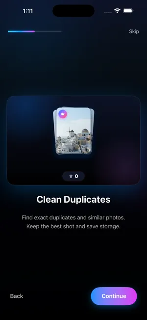

Comment supprimer les photos en double sur iPhone
Mis à jour en · Par Mohamed Elatabany
iOS intègre un album Doublons qui fusionne gratuitement les copies exactes. Il ignore en revanche les photos similaires, et c’est généralement là que se trouve l’essentiel du désordre. Voici comment utiliser les deux.
Méthode 1 : l’album Doublons intégré (gratuit, iOS 16 ou version ultérieure)
Depuis iOS 16, l’app Photos analyse votre photothèque sur l’appareil et rassemble les photos et vidéos en double dans un album appelé Doublons.
Où Photos range ses albums : sous iOS 17, touchez l’onglet Albums et faites défiler vers le bas. Sous iOS 18, faites défiler sous la grille de photos jusqu’aux collections. Sous iOS 26, touchez Collections. Vous y trouverez les sections Types de média (Vidéos, Live Photos, Captures d’écran, Rafales) et Autres (Doublons, « Supprimées récemment »).
- Ouvrez l’app Photos.
- Accédez à Albums → Autres → Doublons (iOS 17), faites défiler jusqu’à Autres → Doublons (iOS 18) ou touchez Collections → Autres → Doublons (iOS 26).
- Chaque ligne correspond à un ensemble de doublons. Comparez les photos, puis touchez Fusionner à côté de l’ensemble.
- Confirmez avec Fusionner [nombre] éléments. Selon ce qu’iOS a trouvé, l’option peut aussi indiquer qu’il s’agit de copies exactes.
- Pour tout fusionner d’un coup, touchez Sélectionner, puis Tout sélectionner, puis Fusionner en bas de l’écran.
La fusion conserve une seule version, celle de meilleure qualité, et y regroupe les métadonnées utiles comme les légendes, les mots-clés et les favoris. Les autres copies partent dans Supprimées récemment, où elles restent 30 jours. Si Photos iCloud est activé, la fusion se synchronise sur vos autres appareils.
Si vous ne voyez pas d’album Doublons
- L’album n’apparaît que si Photos a trouvé au moins un doublon.
- L’analyse se fait en arrière-plan. Après une importation importante ou une mise à jour d’iOS, elle peut prendre un moment ; laisser l’iPhone verrouillé et en charge lui donne le temps de se terminer.
- Votre iPhone doit être sous iOS 16 ou version ultérieure. Photo Cleaner nécessite quant à lui iOS 17 ou version ultérieure.
Les limites de l’outil intégré
L’album Doublons fait très bien une chose : repérer les copies d’une même image. Cela inclut une photo enregistrée deux fois, la même photo reçue dans plusieurs discussions, ou la même image dans une autre résolution ou avec d’autres métadonnées. Ce qu’il ne fait pas :
- Les photos similaires sont ignorées. Cinq prises de la même photo de groupe, une série de couchers de soleil presque identiques ou des photos prises à une seconde d’intervalle ne sont pas des doublons pour iOS, puisque ce ne sont pas les mêmes images.
- Aucun choix de la « meilleure photo » parmi des photos similaires. Quand vous prenez plusieurs clichés pour en réussir un, iOS ne vous aide pas à le trouver.
- Aucune détection du flou. Une version nette et une version bougée du même instant sont traitées comme deux photos différentes.
Pour la plupart des gens, les copies exactes ne représentent qu’une petite part de la photothèque. Le vrai gain se trouve dans les photos quasi identiques.
Méthode 2 : supprimer les photos similaires avec Photo Cleaner
L’outil Similaires / Doublons de Photo Cleaner regroupe à la fois les copies exactes et les photos quasi identiques, puis marque la meilleure de chaque groupe. L’analyse se fait entièrement sur votre iPhone ; rien n’est envoyé.

- Installez Photo Cleaner et touchez Autoriser l’accès complet pour que l’app voie toute votre photothèque.
- Ouvrez la section Similaires / Doublons. Photo Cleaner regroupe les photos identiques ou presque.
- Ouvrez un groupe. La meilleure photo est marquée pour vous : vérifiez-la, ou choisissez-en une autre.
- Choisissez de ne garder que la meilleure. Les autres partent dans la Corbeille, pas directement à la suppression.
- Une fois terminé, ouvrez la Corbeille, récupérez ce que vous voulez garder, puis videz-la. iOS vous demande de confirmer, et les photos passent dans « Supprimées récemment ».
Conseils pour choisir la copie à garder
- Regardez d’abord les yeux et les visages sur les photos de groupe. L’image la plus nette n’est pas toujours celle où tout le monde sourit.
- Gardez les versions retouchées si vous y avez passé du temps. Dans Photos, les modifications sont enregistrées avec la photo : supprimer la copie retouchée supprime aussi la retouche.
- Les favoris méritent un second regard. Si vous avez mis un cœur sur une copie, c’est généralement celle que vous vouliez garder.
- Videz « Supprimées récemment » ensuite si vous avez besoin de l’espace tout de suite. D’ici là, les copies supprimées occupent toujours de la place.
Outil intégré ou Photo Cleaner : le récapitulatif
| Ce qu’il trouve | Album Doublons de Photos | Photo Cleaner |
|---|---|---|
| Copies exactes | Oui | Oui |
| Photos quasi identiques | Non | Oui |
| Marque la meilleure photo | Garde la copie de meilleure qualité | Oui, dans chaque groupe de photos similaires |
| Vérification avant suppression | « Supprimées récemment » (30 jours) | Corbeille, puis « Supprimées récemment » |
| Coût | Intégré | Téléchargement gratuit, 100 suppressions gratuites, une seule fois |
Commencez par la fusion gratuite dans Photos, puis utilisez Photo Cleaner pour les photos similaires qu’elle laisse de côté. À lire aussi : supprimer les photos floues et libérer l’espace occupé par Photos.
Essayez la méthode rapide
Photo Cleaner se télécharge gratuitement, avec 100 suppressions gratuites, une seule fois.